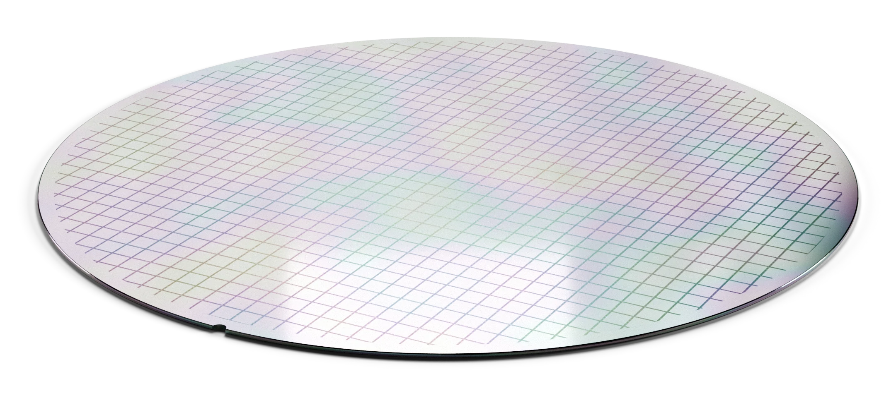

Notes from the bench.
One question per note. Measured, rerunnable, with its limits stated.

Calibration doubles 2-bit accuracy, and 4-bit is still cheaper per answer
Calibration doubles 2-bit accuracy at the same size, 21% to 42% on GSM8K. 4-bit is still cheaper per correct answer: a 2-bit token costs more energy.
Per correct answer, how a model is served matters as much as its size
Measured per correct answer, a 7B serving eight requests beats a 1.5B serving one, on two machines. Serving matters as much as size.
Reading the prompt: what prefill costs, and when it dominates
Reading the prompt: a prompt token costs about 40 times less than a generated one, yet at an 8000-token prompt prefill is 40% of a request's energy. Caching the prefix saves exactly that.
The 8-bit cache does not win even when it fits an extra sequence
A prediction that failed: at 65536 tokens an 8-bit cache fits a third sequence where f16 fits two, and still costs 1.58 times as much. The context long enough to force the batch down also erases what batching saves.
The memory-bound regime: when a long context caps the batch
When a long context caps the batch: a 12 GB card fits only 8 sequences of a 7B at 8k or 16k tokens. An 8-bit cache buys at most one batch doubling, and here that never pays for its 1.5 times penalty.
Our first model: a distilled draft model, and what it did not fix
Our first model: a 0.5B draft distilled from a 7B on one machine. Held-out loss 6% lower, acceptance about 3% higher. Real and small, and a higher confidence threshold did not help.
A long context does not spend the batching saving, where the cache still fits
Does a long context spend the batching saving? Not while the cache fits: batch 8 keeps 72 to 76% of its energy saving at 4096 tokens, against 75 to 79% at 64. Note 8's 60 times needs memory to run out.
What a long context costs, and what an 8-bit KV cache does not save
What a long context costs per token: 1.3 times at 16k on an RTX 5070 Ti, up to 1.9 times on an M5 Pro, too little to explain the datacenter's 60 times. An 8-bit KV cache saves no energy at batch 1 on either.
Small models pay more per weight, on a discrete GPU too
Note 6's width sweep on an RTX 5070 Ti. Small models pay up to 2.2 times more energy per weight, more than on the Mac for the 4-bit formats; Q4_0 is cheapest at every width; Q5_K_M beats Q6_K throughout.
Same result, second tool: speculative decoding through llama-server
Notes 7 and 9 repeated through llama-server, the program real deployments use. Every finding holds. Also why the same run could not run on our RTX machine.
The same token, plugged in, and under batching
An RTX 5070 Ti Laptop GPU on AC, and a batch sweep on CUDA. Plugging in buys 34 to 46% more speed for 23 to 33% more energy per token, and with the GPU at its ceiling from batch 1 the second request saves 43%.
One flag fixes speculative decoding's energy problem
A draft confidence threshold removes speculative decoding's energy penalty on every task tested. At about 0.5, speculation on prose becomes a free 1.3x speed-up.
Tokens per megawatt-hour
Every MLPerf LLM result with measured wall power. A B200 server buys 2.7 times the tokens per joule of an H100 NVL one, and the roofline says it must batch 58 or more sequences per weight pass.
Faster is not cheaper: the energy of speculative decoding
Speculative decoding with a draft model and with n-gram copying, on code, prose and edits. It can be faster and more expensive at once; copy-based drafting on an edit costs 32% of plain decoding.
Small models pay more per weight
Five formats across four model sizes. A weight in a 0.5B model costs up to 1.6 times one in a 7B; Q4_0 is cheapest at every width; the Q5_K_M against Q6_K order flips with width.
The cost of unpacking
Each format's matrix-vector kernel measured alone. Q4_0 and Q4_K read identical bytes at identical speed; Q4_K's unpacking costs 40% more chip energy. Explains note 2's largest residual and corrects its roof.
Two machines, one token
The study on an RTX 5070 Ti Laptop GPU. Q4_0 wins on both machines and a 4-bit token costs the same whole-machine energy on both; one Mac finding does not transfer.
Does it hold? A model five times larger, and a second runtime
The format study at 7B, where every finding replicates and the hardware is used better, and in MLX, where repeat runs do not yet agree, so only claims that survive both passes are made.
Where the joules go: a roofline and an energy model for decode
A decode roofline from measured bandwidth, and a validated energy model whose residuals isolate the cost of unpacking each format. Two wrong first attempts, kept in.
Fewer bits is not fewer joules
Eight quantization formats and batch sizes 1 to 8, energy at the chip and at the board. Chip-only measurement misranks F16 by 2x; batch 2 saves 1% per token and batch 8 saves 72%.
What we want to know next.
Width or depth?
Small models pay more per weight. Which part of their shape costs it?
Serving under load
What a token costs on a real server, with real traffic.
70B on one desk
Large models on a single workstation, measured end to end.